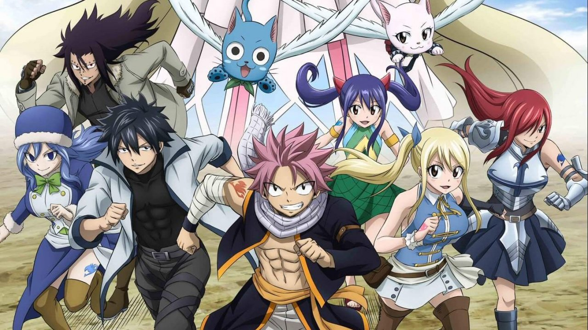
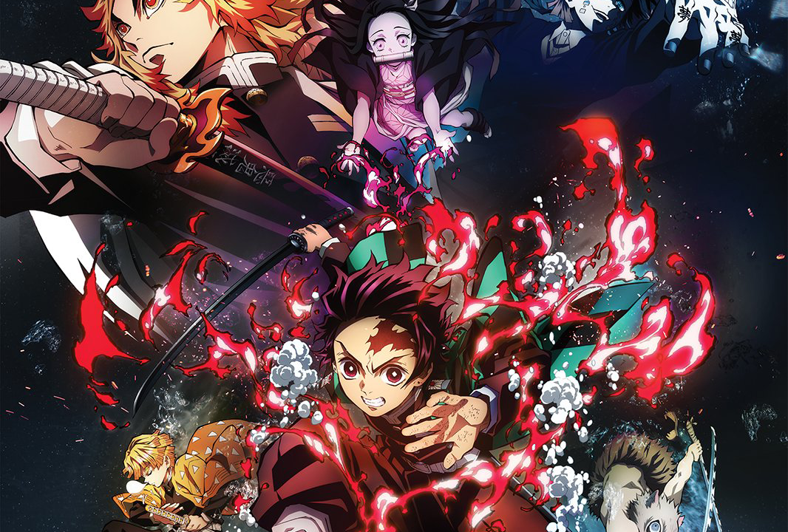
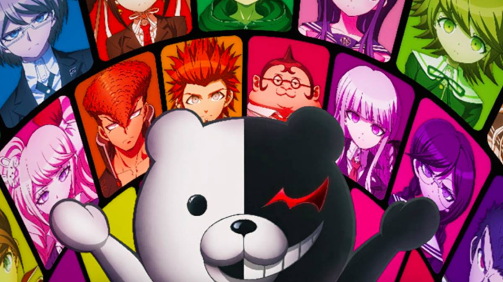
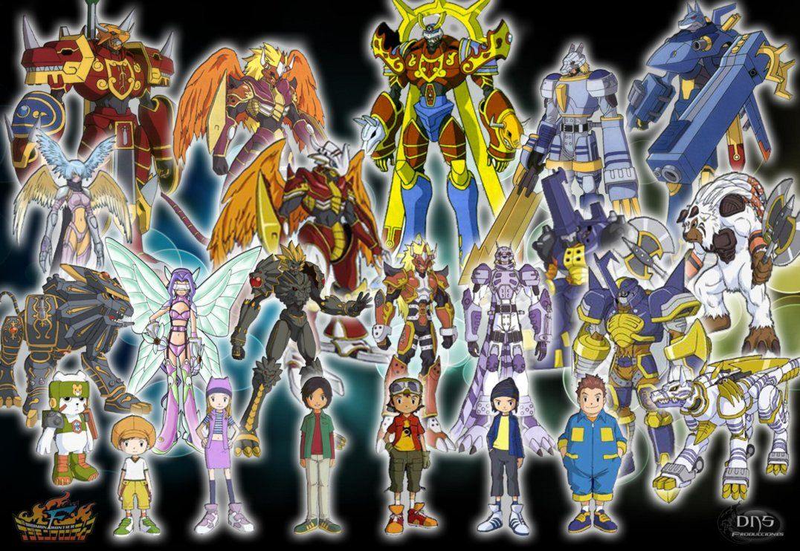
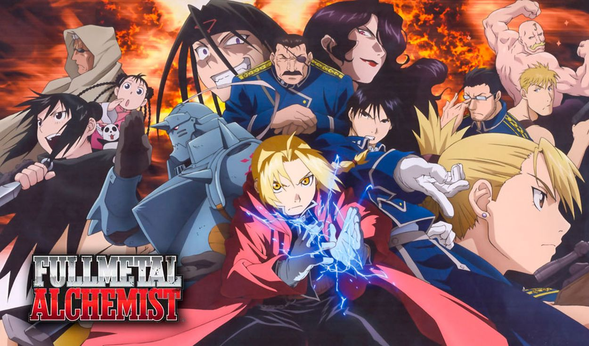
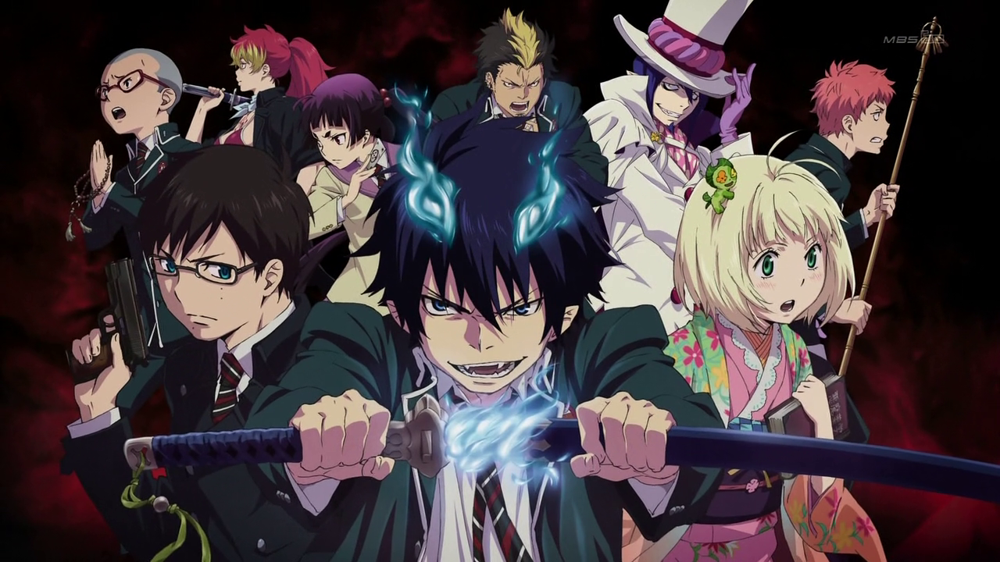
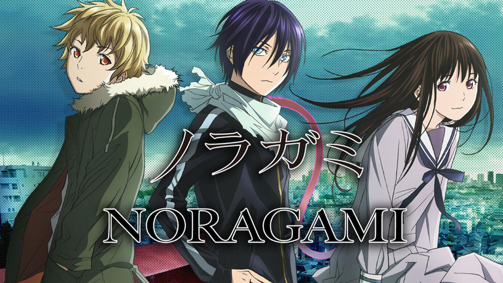
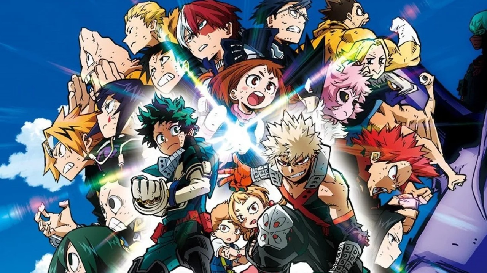
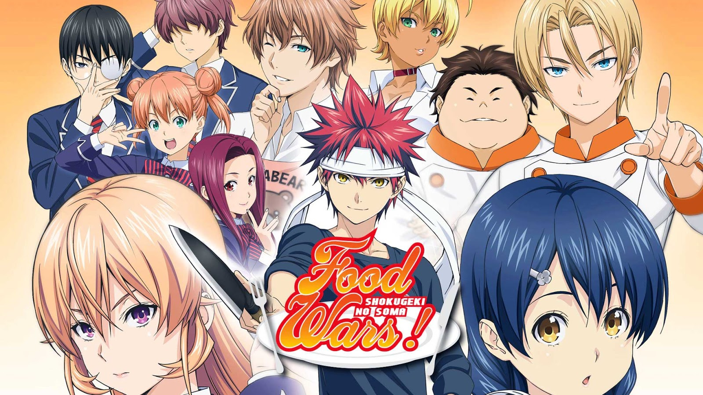
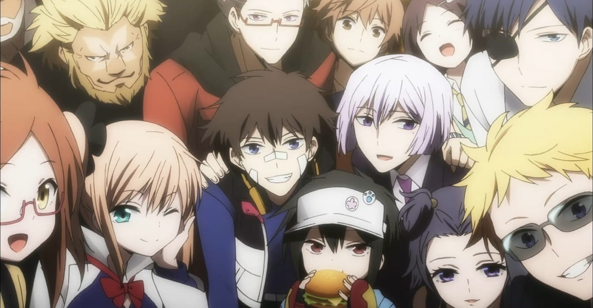

Top 1: Fairy tail

Fairy Tail cuenta la historia de un joven mago
llamado Natsu en la búsqueda de su maestro y padre adoptivo Igneel que resulta ser un dragón.
Por ello se unió a Fairy Tail, un gremio de magos que es famoso por los destrozos y daños que provocan en diversas ciudades
(lo cual no debería ser así). El mundo de Fairy Tail gira alrededor de los magos (los cuales poco tienen que ver con la idea general del mago común)
que realizan encargos a cambio de dinero, similar a un cazarecompensas.
Natsu conoce a Lucy, una guapa muchacha cuyo sueño era ingresar a un gremio de magos, específicamente, a Fairy Tail,
lo cual consigue gracias a la ayuda de Natsu. De ahí en adelante, la historia sigue los movimientos de esta pareja de magos los cuales se
ven envueltos en un sin número de aventuras antes de conseguir la meta final de encontrar a Igneel.
Top 2: Demon Slyer

Estamos en la era Taisho de Japón. Tanjiro, un joven que se gana la vida vendiendo carbón,
descubre un día que su familia ha sido asesinada por un demonio.
Para empeorar las cosas, su hermana menor Nezuko, la única superviviente de la masacre,
ha sufrido una transformación en demonio. Destrozado por los acontecimientos Tanjiro decide convertirse
en un cazador de demonios para poder devolver a su hermana a la normalidad y matar al demonio que masacró a su familia.
Top 3: Danganronpa

Un grupo de 15 estudiantes de secundaria que sobresalen en sus propios campos (ej:shaman, deportista, Idol)
son invitados a la Academia Hope Peak, una secundaria que solo acepta lo mejor de lo mejor.
Graduarse de esta academia significa éxito asegurado en la vida. Poco después de llegar, los estudiantes se ven atrapados en la escuela,
con todas las entradas y ventanas selladas, por un sádico oso de peluche llamado "Monokuma", quien ha tomado control de las instalaciones
y les da dos opciones a los estudiantes: 1) Vivir por el resto de sus vidas dentro de las paredes de la escuela, o, 2) intentar escapar de esta "graduándose".
Para graduarse un estudiante tiene que realizar un "Asesinato perfecto", matando a uno de sus compañeros sin ser descubierto por el resto de los estudiantes.
Si el culpable es descubierto, este será "castigado". Si se sale con la suya, el quedara en libertad y el resto de los estudiantes serán "castigados".
Top 4: Digimon Frontier

Después de recibir un mensaje en sus celular Takuya es llevado por un tren al Digiworld junto con otros 4 niños, Koji, Zoe, J.P. y Tommy,
allí son guiados por Bokomon y Naemon para encontrar los digispirits que les permitirán a Takuya y sus amigos digievolucionar en los
guerreros legendarios y asi enfrentar a Cherubimon
Top 5: Fulmetall Alchemist

La historia se centra en dos hermanos, Edward Elric y Alphonse Elric que rompieron el mayor tabú de la alquimia,
la trasmutación humana al tratar de revivir a su fallecida madre; en consecuencia Edward pierde su pierna izquierda y Alphonse pierde todo su cuerpo,
Edward para salvar a su hermano sella su alma en una gran armadura de hierro a cambio de su brazo derecho; ahora los dos con un nuevo
objetivo buscan desesperadamente la piedra filosofal para poder regresar sus cuerpos a la normalidad.
Top 6: Bleach

Kurosaki Ichigo es un estudiante de instituto de 15 años, que tiene una peculiaridad: es capaz de ver,
oír y hablar con fantasmas. Pero no sabe hasta dónde puede abarcar la clasificación de espíritus, ni lo que conlleva el saberlo. Un buen día,
una extraña chica de pequeña estatura que viste ropas negras de samurai entra en su cuarto. Se llama Rukia Kuchiki, y es una Shinigami (Dios de la Muerte).
Ante la incredulidad de Ichigo, le explica que su trabajo es mandar a las almas buenas o plus a un lugar llamado la Sociedad de Almas, y eliminar a las almas malignas o hollows.
Luego junto a Inoue Orihime, Ishida Ury y Sado Yasutora se veran envueltos en diferentes batallas, las cuales iran desarrollando sus diferentes habilidades que le
otorgaran a cada uno su importancia en la serie.
Top 7: Ao no exorcist

En Ao no exorcist: El mundo esta unido por 2 dimensiones,el mundo de los seres vivos y de los demonios llamada también Geneha ninguno de los 2 mundos puede tener
contacto alguno,pero estos demonios pueden ir al mundo de los seres vivos y poseer y manipular a cualquier humano,vease el caso de Satanás el dios oscuro del inframundo,
Satanás quiere entrar al mundo de los seres vivos,pero no hay cuerpo humano que lo pueda resistir ,visto esto engendro a Rin Okumura hijo suyo y de una humana,pero resulta
que Rin okumura se da cuenta que es el hijo de Satanas y lo rechaza como padre,y el no esta dispuesto a seguir sus planes,después de un intento fallido de satanás de llevar
y matar a su protector Fujimoto, el Hijo de satanás (Rin Okumura) decide ser un Exorcista y así comienza la historia en Ao no exorcist.
Top 8: Noragami

Yato es un dios menor cuyo sueño es tener una gran cantidad de seguidores que lo adoren y recen plegarias por él. Desafortunadamente,
su sueño está lejos de hacerse realidad, ya que no tiene ni siquiera un solo santuario dedicado a él. Para empeorar las cosas, la única socia que tenía para ayudar a resolver
los problemas de la gente acaba de renunciar. Su divina suerte sólo podría cambiar cuando se tropieza con Iki Hiyori, quien le salva la vida. Este hecho deja a Hiyori en un buen lío también,
por lo que se quedará a su lado hasta que su problema se resuelva. Junto a Hiyori y su nuevo socio Yukine, Yato hará todo lo que pueda para ganar fama, reconocimiento y sólo tal vez, una
capilla dedicada a él también.
Top 9: Boku no hero

Las personas no nacen igual. El protagonista de esta historia es uno de esos casos raros que nacen sin superpoderes, pero esto no le impedirá perseguir su sueño:
ser un gran héroe como el legendario All-Might. Para convertirse en el héroe que quiere ser, se apuntará a una de las academias de héroes más prestigiosas del país: Yueiko. Con la ayuda de su ídolo,
All-Might, ¿podrá convertirse en un verdadero héroe?
Top 10: Shokugeky no Souma

El sueño de Yukihira Souma es convertirse en un chef de tiempo completo en el restorán de su padre y sobrepasar su habilidad culinaria.
Cuando Yukihira se gradúa de secundaria, su padre, Yukihira Jouichirou, cierra su restorán para ir a cocinar a europa. Aunque derrotado, el espíritu luchador de Souma es reavivado
por un desafío de Jouchirou, el cual es sobrevivir en una escuela de élite culinario donde solo el 10% de los estudiantes logra graduarse. ¿Podrá Souma lograrlo?
Top 11: Hamatora

En el mundo conocemos los "Minimum" o "Milagro menor", poderes especiales hereditarios descubiertos solo en una ínfima cantidad de humanos.
Aquellos que poseen tales poderes se conocen como "Minimum Holders". Nice y Murasaki son dos compañeros que forman una agencia de detectives en Yokohama llamada "Hamatora" en el año 2014,
aunque su "oficina" no es más que una mesa en el Cafe Nowhere donde quedan con sus clientes. Un viejo conocido de ambos, un policía llamado Art, les contrata para ayudarle en la
investigación de un caso de asesinato que está investigando, y descubren que las víctimas son todas "Minimum Holders". Siendo ambos Minimum Holders, Nice y Murasaki se verán involucrados en el caso,
les guste o no.